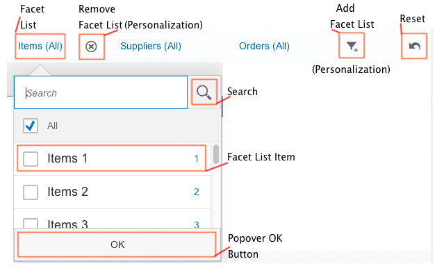

With the facet filter, users can explore a data collection by applying multiple filters along certain discrete attributes or facets of the overall data collection.
The following figure shows the structure of the facet filter.
Your application displays a large list of products that can be grouped by category and
supplier. With the facet filter, you allow users to dynamically filter the list so
it only displays products from the categories and suppliers they want to see. In the
following figure, the FacetFilter control is outlined in red and
will be referred to as the 'toolbar' for the user. In the example, the user has set
the following filters:
Category: Printer
Supplier: Red Point Stores
The facet filter supports the following two typeswhich can be configures using the
control's type property:
Simple type
The simple type is the default type and available for desktop and tablets.
Light type
The light type is automatically enabled on smart phone sized devices, but is also available for desktop and tablets.